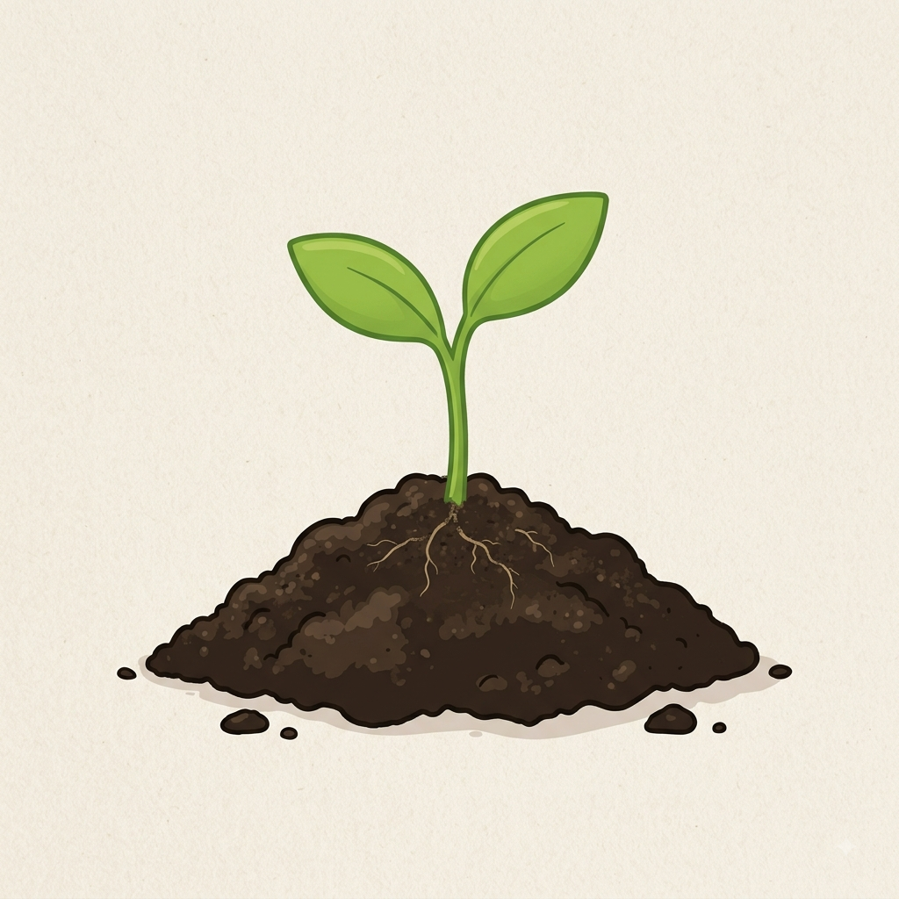
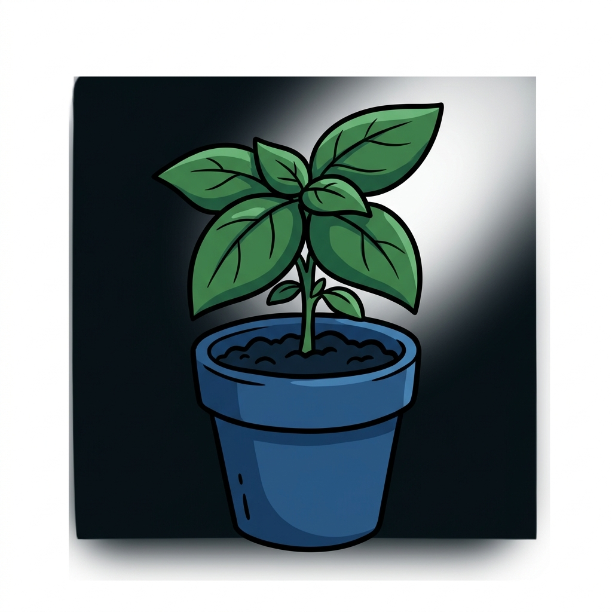
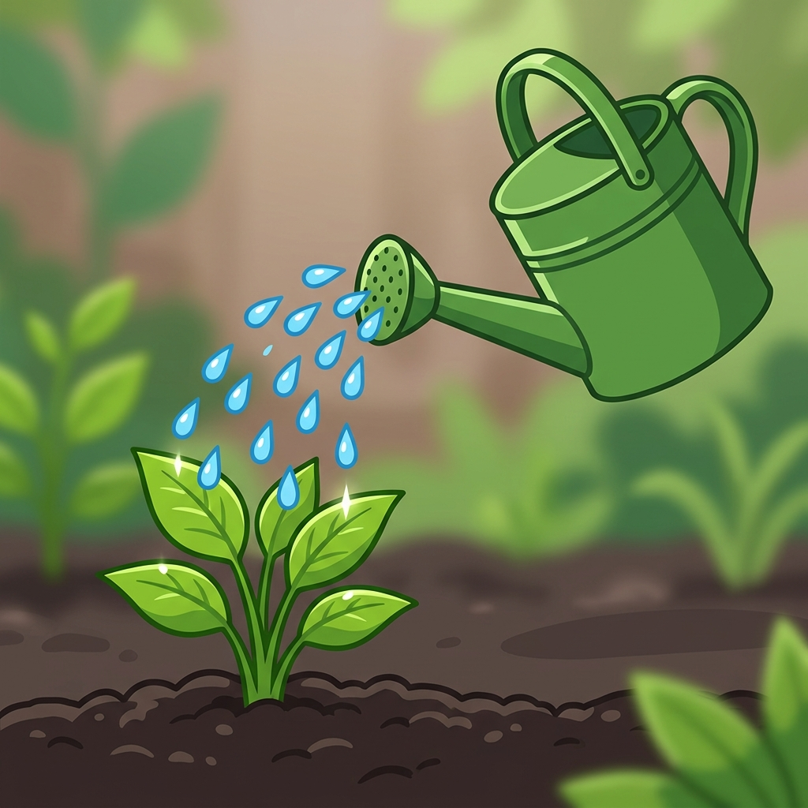
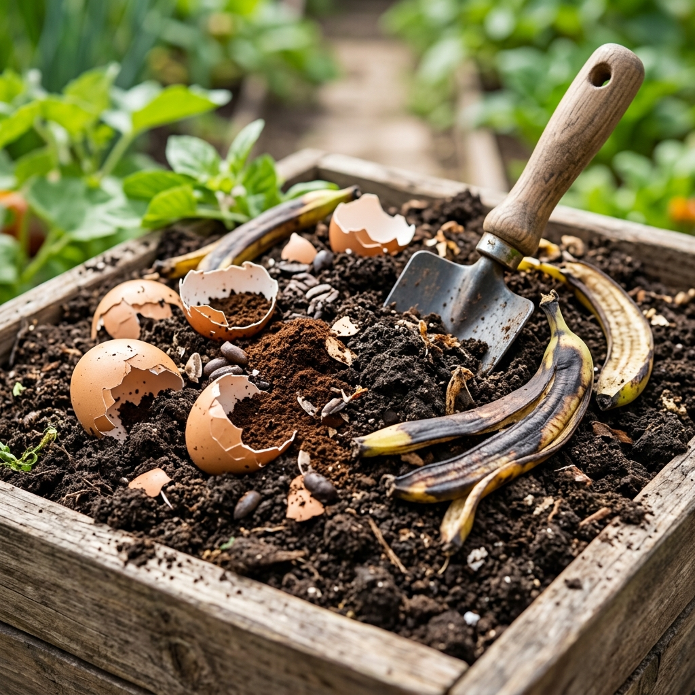
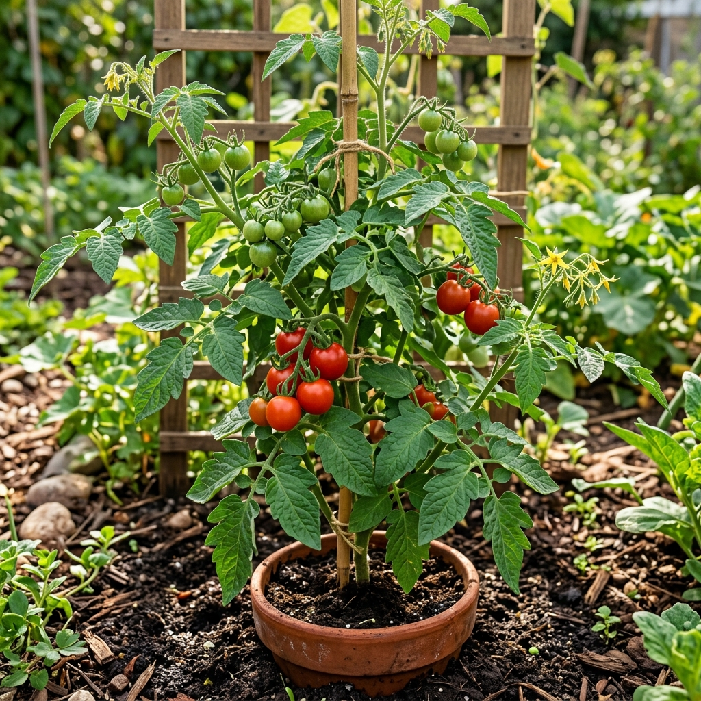
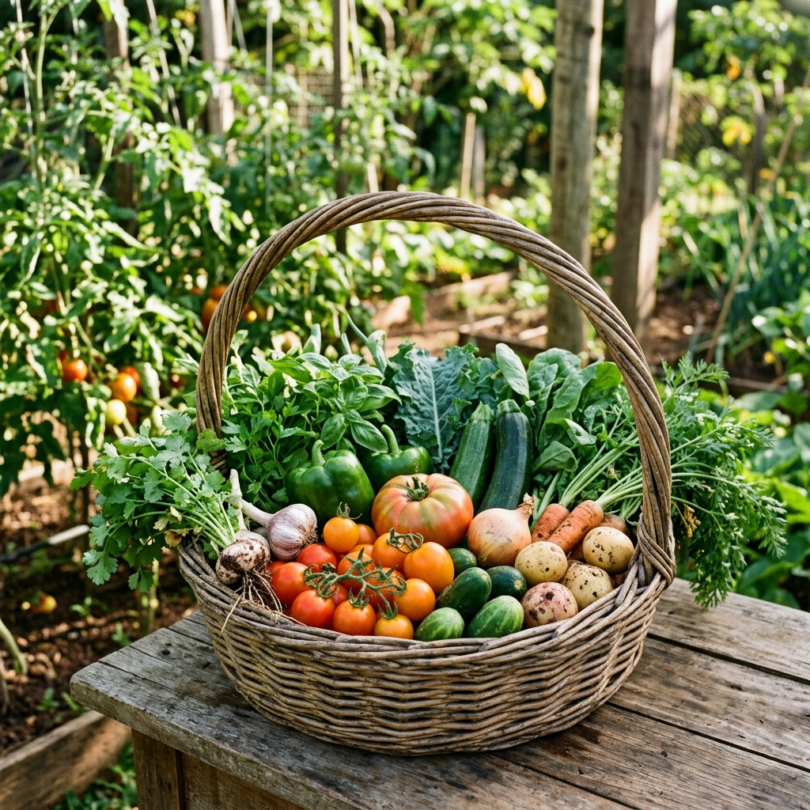

Bem-vindo ao Blog!
Por: Bernardo Henrique da Silva Camargo
Aqui vou compartilhar tudo sobre como plantar, cuidar e colher vegetais e ervas fresquinhas em qualquer espaço!
Dicas, cultivo e segredos para ter alimentos frescos ao seu alcance

Por: Bernardo Henrique da Silva Camargo
Aqui vou compartilhar tudo sobre como plantar, cuidar e colher vegetais e ervas fresquinhas em qualquer espaço!

Por: Bernardo Henrique da Silva Camargo
Manjericão, hortelã e cebolinha são ideais para iniciantes. Elas precisam de pouca manutenção e crescem super rápido!
Fonte: Guia do Jardineiro

Por: Bernardo Henrique da Silva Camargo
Regar demais pode sufocar as raízes. A dica de ouro é sentir a terra com o dedo: regue apenas quando o solo estiver seco no topo.
Fonte: Dicas de Cultivo

Por: Bernardo Henrique da Silva Camargo
Sabia que casca de ovo e pó de café são ótimos adubos? Eles fornecem cálcio e nitrogênio essenciais para suas plantas crescerem fortes.
Fonte: Vida Natural

Por: Bernardo Henrique da Silva Camargo
A maioria das hortaliças precisa de pelo menos 4 a 6 horas de sol direto por dia para fazer fotossíntese e crescer de forma saudável.
Fonte: Manual de Botânica

Por: Bernardo Henrique da Silva Camargo
Colher seus próprios temperos e vegetais dá uma satisfação incrível, além de garantir alimentos 100% livres de agrotóxicos.
Fonte: Horta Sustentável